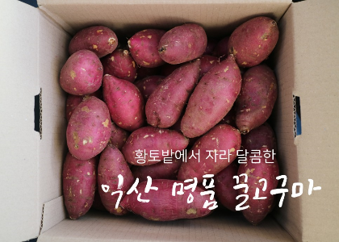
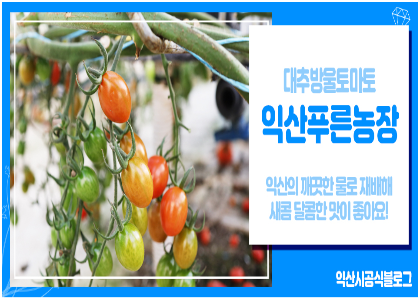
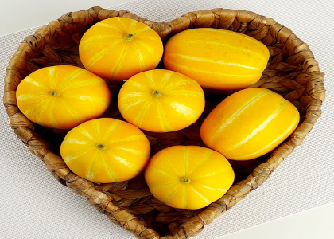

-

밤고구마 + 호박고구마 = 꿀고구마, 베니하루카
공기 좋고 살기 좋은 도시 전북 익산에서 농부들이 정성껏 키운 꿀고구마!
일반적으로 꿀고구마라고 부르는 상품의 고구마를 베니하루카라고 하며, 밤고구마와 호박고구마를 섞은 품종이라고 많이 한다.
겉모습은 밤고구마와 같으며 그 속과 맛은 호박고구마와 같은 품종의 고구마로 당도가 높다.
-

대추방울토마토는 일반 방울토마토에 비해 단단하며 타원형의 형태로 꼭지가 쉽게 떨어져 먹기 편한 것이 특징이다.
섬유질이 풍부하고 열량이 낮으며 적게 먹어도 쉽게 포만감이 있고 비타민 A, C를 모두 섭취할 수 있는 영양 가득한 채소이다.
라이코펜 등 많은 항상화 성분이 있어서 자외선 차단 및 노화 방지와 체내 유해한 활성산소를 제거해주고 암을 예방해준다.
베타카로틴과 루테인 성분이 다량 함유되어 있어 황반 변성이나 백내장 등 안구 질환 예방과 시력 개선에도 도움이 된다.
-

터널형 하우스에서 재배되는 익산 참외는 병충해 발생이 거의 없어 농약 걱정 없이 마음 놓고 먹을 수 있는 깨끗하고 안전한 먹거리이다.
참외는 파종에서 수확까지 많은 일손이 필요한 작목으로 익산 참외는 손으로 일일이 순을 자르는 작업을 해 그 정성까지 엿볼 수 있다.
주품종으로는 금싸래기, 007 참외, 오복꿀로써 화학비료를 적게 주고 퇴비를 많이 주어 육질이 아삭아삭하고 당도가 높은 것이 특징이다.